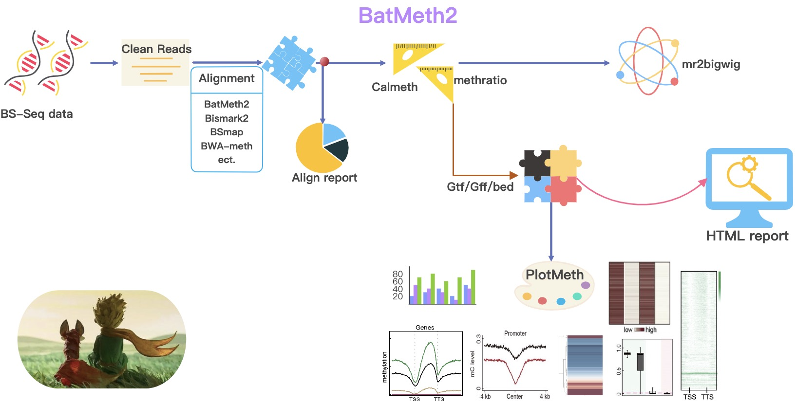

BatMeth2: DNA Methylation Data Analysis¶
BatMeth2 is an easy-to-use, auto-run package for DNA methylation analyses. In order to complete the DNA methylation data analysis more conveniently, we packaged all the functions to complete an easy-to-use, auto-run package for DNA methylation analysis. During the execution of BatMeth2 Tool, an html report is generated about statistics of the sample.
Installation
Please download and install the tools (see Installation)
The functions you can use BatMeth2 to do:
Alignment: Align bsseq data
Calculate DNA methylation level: Calulate DNA methylation level (ML) across whole genome
Calulate mC across predefined regions: Calulate DNA ML profile or heatmap across gene / TE or peak region
Meth2BigWig: Convert ML txt file to BigWig format, used for IGV visulization
DiffMeth: Perform differential analyses with auto defined regions or predefined regions.
PlotMeth: Plot DNA ML profile, heatmap or boxplot across genes/TEs/etc.
Contents¶
While developing deepTools, we continuously strive to create software that fulfills the following criteria:
efficiently extract reads from BAM files and perform various computations on them
turn BAM files of aligned reads into bigWig files using different normalization strategies
make use of multiple processors (speed!)
generation of highly customizable images (change colours, size, labels, file format, etc.)
enable customized down-stream analyses, meaning that every data set created can be stored by the user
modular approach - compatibility, flexibility, scalability (i.e. we can add more and more modules and make use of established methods)
Citation¶
Please cite BatMeth2 as follows:
Zhou Q, Lim J-Q, Sung W-K, Li G: An integrated package for bisulfite DNA methylation data analysis with Indel-sensitive mapping. BMC Bioinformatics 2019, 20:47. https://bmcbioinformatics.biomedcentral.com/articles/10.1186/s12859-018-2593-4
Tip
For feature requests or bug reports please open an issue on github.